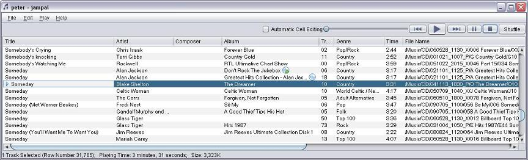

Jampal mp3 Library and Jukebox Program
Jampal offers some unique advantages over the other jukebox
and mp3 player programs available.
-
Jampal stores a music library of over 40000 songs with
ease.
-
You can sort, organize and categorize your tracks.
-
It is very fast. You can sort 40000 tracks in under a
second.
-
You can update hundreds of track tags in one operation in
a few seconds.
-
Jampal libraries can be easily customized so that you can
organize your music any way you want to.
-
You can create your own frames within the ID3v2 standard
to categorize your songs which ever way you want.
-
The library can be imported into a spreadsheet or text
editor program.
-
Most ID3v2 fields are supported, including all text
fields and any number of attached pictures.
-
Reference information from the ID3v2 standard is included
to help understand the purpose and usage of each frame.
-
Synthesized voice announcements of song titles (on all
platforms). Announcements can use correct pronounciation
for the language of the song.


Requirements
(1) One of the following:
-
Windows (Windows 7, XP, 2000, 98, ME, etc.)
-
Linux
-
Macintosh
-
Solaris SPARC
-
Solaris x86
-
Any Machine that supports Java 6
(2) Java Runtime Environment version 6 or higher. This is a
free download from www.java.com. Also OpenJDK is supported.
Please let me know if you find Jampal useful or if you
find any bugs or shortcomings in it. Also I would like to
hear from anybody who runs it on linux, macintosh or
Solaris. The best way to do this is by posting
a message at the product information page or else send
me email at pgbennett at users.sourceforge.net.